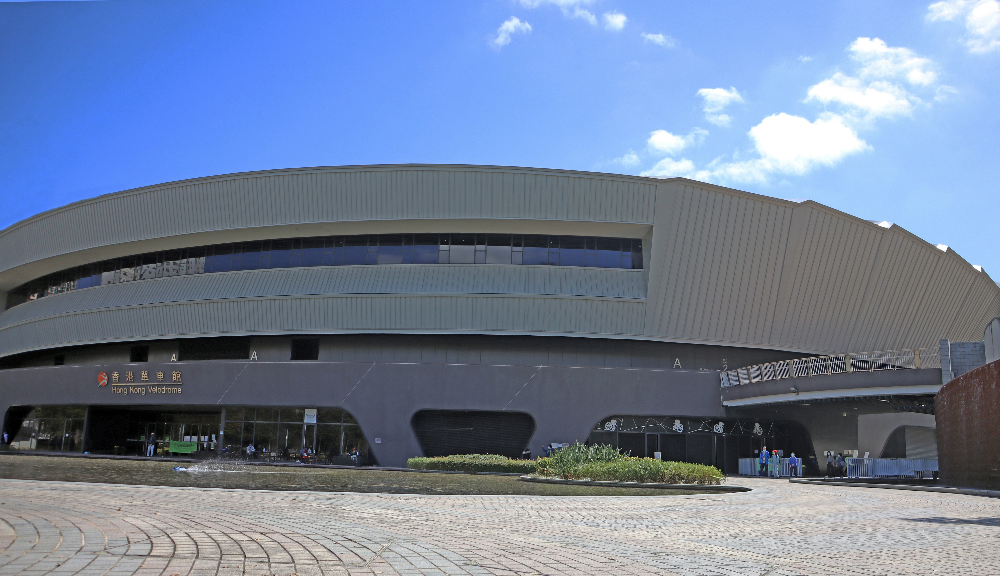

I like taking photos because I can record every good thing in my life and it can be more relaxed of me. Sometimes, I go hiking and take a number of photos of different views. It is good for us to enjoy our daily life. In My Work Area, there is a photo taken by me a number of years ago. I not only took this photo with my camera, but also edit it with Adobe PhotoShop, which is very popular in different industried nowadays. So, do you like my work?
If you pay attention to my home page, you may see that my English name, Tristan, is obtained from a fiction book called Ferryman written by an English writer, Claire Mcfall. The main character in the fiction, Tristan, is very handsome and responsible. With quite contribution, he is willing to help his girlfriend, Dylan. He is not afraid of anything, including ghosts in the fiction. Right, I also like to read because a fiction book consists of many interesting stories in which I can communicate with different characters and play with them.
My work:

Developed and designed by Tristan WONG
Powered by Bootstrap
All rights reserved © 2022